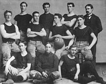
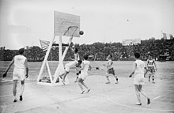

El baloncesto nació como una solución a la necesidad de realizar alguna actividad deportiva durante el invierno, en la escuela de la YMCA (Young Men's Christian Association) de Springfield, Massachusetts. En 1891, James Naismith, profesor de educación física en la escuela, ideó el baloncesto como actividad recreativa con una pelota basado en trece reglas. El juego se extendió por Estados Unidos, Canadá y el resto del mundo, experimentando algunas modificaciones durante el curso del tiempo. Muchas de las reglas iniciales se mantienen hasta la actualidad, aunque algunos aspectos del juego tuvieron que modificarse para responder a desarrollos en la técnica de los jugadores y aspectos no previstos en el desarrollo del juego, normalmente como consecuencia de la manipulación de las reglas por parte de los entrenadores y jugadores para inclinar los partidos.
El baloncesto nació como una solución a la necesidad de realizar alguna actividad deportiva durante el invierno, en la escuela de la YMCA (Young Men's Christian Association) de Springfield, Massachusetts. En 1891, James Naismith, profesor de educación física en la escuela, ideó el baloncesto como actividad recreativa con una pelota basado en trece reglas. El juego se extendió por Estados Unidos, Canadá y el resto del mundo, experimentando algunas modificaciones durante el curso del tiempo. Muchas de las reglas iniciales se mantienen hasta la actualidad, aunque algunos aspectos del juego tuvieron que modificarse para responder a desarrollos en la técnica de los jugadores y aspectos no previstos en el desarrollo del juego, normalmente como consecuencia de la manipulación de las reglas por parte de los entrenadores y jugadores para inclinar los partidos.
En 1891, James Naismith intentaba idear un deporte que sus alumnos pudieran practicar bajo techo, pues los duros inviernos en Nueva Inglaterra dificultaban la realización de ejercicio al aire libre. Las actividades de educación física que se practicaban en la época se basaban en los métodos alemanes, monótonos y poco indicados para un grupo de jóvenes llenos de energía. Naismith se inclinaba por un juego de pelota, para motivar mejor a sus alumnos, pero los deportes populares por entonces se caracterizaban predominantemente por el uso de la fuerza o el contacto físico y eran inadecuados para practicarlos en un gimnasio. Aunque a veces se mencionan los antiguos juegos de pelota pok-ta-pok y tlachtli —de origen maya y azteca respectivamente— como antecedentes del baloncesto moderno, según su inventor la idea de utilizar los tiros a una canasta como objetivo del juego provino de un antiguo juego de su infancia denominado duck on a rock —o 'pato sobre una roca'— que consistía en alcanzar un objeto colocado sobre una roca lanzándole una piedra. Naismith encargó cajas de unos 50 cm² para utilizar como blanco, pero el bedel del colegio solo logró conseguirle unas cestas de melocotones, que mandó colgar en las barandillas de la galería superior que rodeaba el gimnasio, a una determinada altura.
Como Naismith contaba con 18 alumnos, decidió que los equipos estuviesen formados por nueve jugadores cada uno. Pronto el número de jugadores se redujo a siete, y, en 1896, al actual de cinco jugadores. El tablero surgió para evitar que los seguidores situados en la galería donde colgaban las cestas, pudieran entorpecer la entrada del balón. La introducción del tablero, a comienzos del siglo XX, dio lugar a la jugada llamada rebote, que ha pasado a ser fundamental en el juego. Las cestas de melocotones dieron paso a aros metálicos con una red sin agujeros hasta evolucionar a la malla actual.
En los años 1970 aparecieron varios jugadores con mucho talento, como Kareem Abdul-Jabbar, mejor puntuador de la historia de la NBA, Elvin Hayes, Moses Malone, Robert Parish o Bernard King; asimismo, en los ochenta destacaron Hakeem Olajuwon, John Stockton, Karl Malone, Dominique Wilkins y Patrick Ewing, junto con los tres jugadores que dominaron el deporte y contribuyeron a aumentar la popularidad del baloncesto en todo el mundo durante esta década: Larry Bird, Magic Johnson y, sobre todo, Michael Jordan, considerado como el más grande jugador de la historia.5 A partir de los 1990, algunos equipos comenzaron a desafiar la posición dominante de los Lakers y los Celtics en el baloncesto estadounidense, como por ejemplo, los Bulls de Chicago, dirigidos por Jordan y que obtuvieron seis títulos entre 1991 y 1998; y los Spurs de San Antonio, con cinco títulos entre 1999 y 2014. Las nuevas estrellas surgidas en los noventa fueron David Robinson, Gary Payton, Jason Kidd, Steve Nash, Dirk Nowitzki, Kobe Bryant y Shaquille O'Neal, conocido por su físico impresionante y sus bromas en el campo de juego. La profesionalización del baloncesto no se completó verdaderamente hasta 1990. En 1989, la FIBA cesó de excluir a los profesionales de sus torneos y en 1992 los jugadores profesionales pudieron jugar por primera vez en los Juegos Olímpicos. Esto no fue óbice para el desarrollo del deporte amateur, y se estima que en 2012 veintiséis millones de personas practicaban el baloncesto en los Estados Unidos, entre ellos quince millones de manera esporádica. Sobre la misma época, el número de jugadores en todo el mundo se cifra en unos cien millones federados y más de 450 millones de jugadores recreacionales.
Desde la creación del deporte, los Estados Unidos han dominado los torneos internacionales, con cierta competencia por parte de Yugoslavia —y posteriormente de Serbia— y de los equipos de la Unión Soviética. El equipo estadounidense ha conseguido el oro en catorce de las dieciocho olimpiadas en las que el baloncesto ha estado presente. El primer Dream Team («equipo de ensueño») compuesto entre otros por Michael Jordan, Magic Johnson, Charles Barkley y Scottie Pippen compitió en los Juegos Olímpicos de Barcelona y obtuvo el título con una diferencia media de 42 puntos sobre sus adversarios; este equipo es considerado como el mejor de la historia del deporte. No obstante, debido a la popularidad creciente del baloncesto en el mundo, los nuevos equipos nacionales fueron ganando nivel y algunos llegaron a desafiar la supremacía estadounidense. En el Campeonato Mundial de 2002, la selección de Estados Unidos acabó sexta, por detrás de Yugoslavia, Argentina, Alemania, Nueva Zelanda y España, a pesar de estar conformada íntegramente por jugadores de la NBA. En los Juegos Olímpicos de 2004 los Estados Unidos tuvieron que contentarse con la medalla de bronce tras ser batidos por Puerto Rico, Lituania y Argentina. También perdieron contra el equipo griego en las semifinales del Campeonato Mundial de Baloncesto de 2006, que ganó España. No obstante, según la clasificación de la FIBA del 3 de octubre de 2015, la selección estadounidense era la mejor del mundo en esa fecha, seguida por la española, la lituana, la argentina, la francesa, la serbia, la rusa, la turca, la brasileña y la griega.